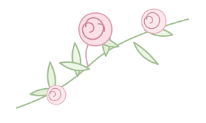
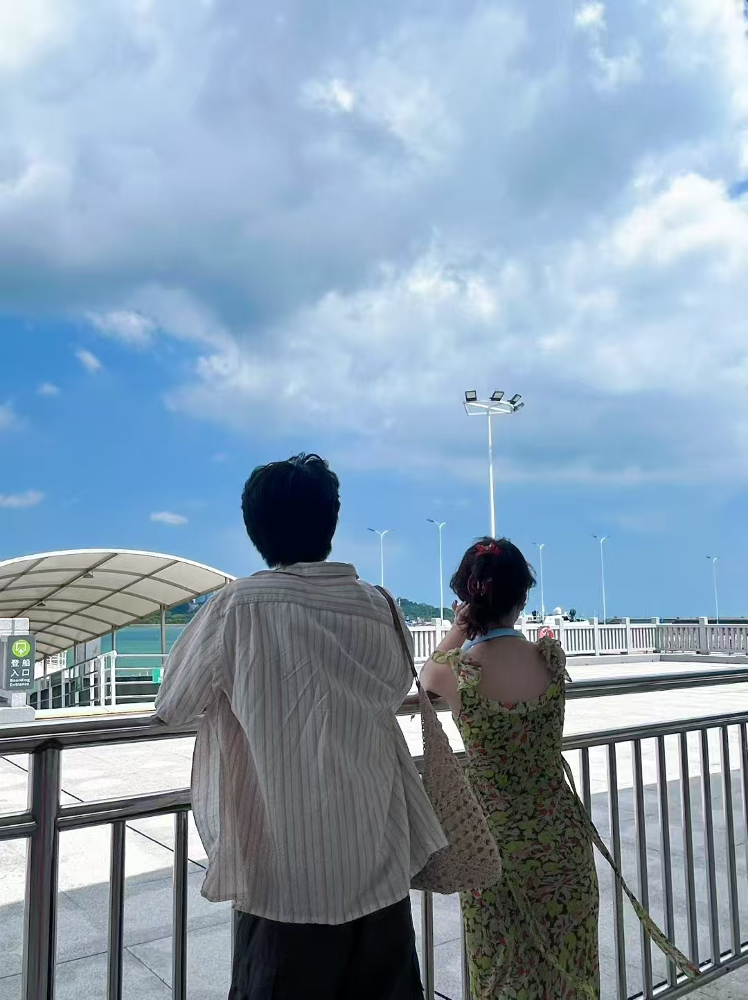

小五：
二周年快乐。
今天是我们的第二个 10 月 19 日。两年里，我们一起过了生日，去了天津、厦门、珠海、广州、香港和澳门，也在北京、南昌、景德镇、首尔和釜山留下了照片。
照片里其实都是很普通的小事：一顿饭、一段路、一次牵手、一个刚好的日出。可它们放在一起，就是我们自己的两年。
异地让见面需要等待，但也让每一次重聚都很具体。很高兴这些地方都有你，也很高兴现在还是我们。
接下来的日子，继续见面，继续一起走。
二周年快乐，很高兴遇见你。

OUR SECOND YEAR
从校园，到不同的城市，再回到彼此身边。
两年里，普通的日子也都变成了想留下的照片。
A LETTER FOR YOU
有些话，想认真放在这一页。
小五：
今天是我们的第二个 10 月 19 日。两年里，我们一起过了生日，去了天津、厦门、珠海、广州、香港和澳门，也在北京、南昌、景德镇、首尔和釜山留下了照片。
照片里其实都是很普通的小事：一顿饭、一段路、一次牵手、一个刚好的日出。可它们放在一起，就是我们自己的两年。
异地让见面需要等待，但也让每一次重聚都很具体。很高兴这些地方都有你，也很高兴现在还是我们。
接下来的日子，继续见面，继续一起走。
二周年快乐，很高兴遇见你。
OUR TIMELINE
左右看看
OUR PLACES
不是地图上的距离，
是我们真正去过的两年。

01 / 112025 夏天
鼓浪屿的风很大，海边的牵手也刚刚好。那趟旅行没有特别宏大的计划，但现在想起来，都是很清楚的画面。
OUR LITTLE ALBUM
6 个片段 · 28 张照片
A TINY GAME
四段旅程，四组照片。看看你多久能全部找出来。
AND THEN, US
距离二周年还有 31 天
二周年快乐，小五。
很高兴遇见你，也很高兴这两年是我们一起过的。
下一站，还是一起。